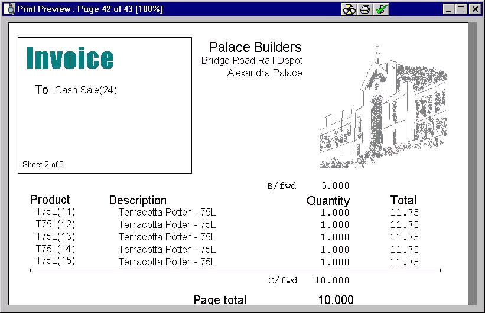
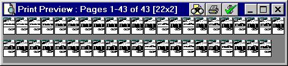

It goes without saying that Print Preview is valuable and time saving addition to almost any application.
Often one of the most time consuming parts of application development is reporting.
Another extremely useful feature in any application is the ability for end users to easily amend reports.
The print preview and report generator component presented here intends to address all these issues.

The Preview Window.
The core reporting engine is driven by three simple components which can be easily mastered and used to create most reports quickly and efficiently:
A simple and intuitive semantic based approach is used to paginate the report. The datastream allows a natural expression of intent, which is often enough to produce the required report. For example, if sales orders consist of a header record followed by several product lines, a page break automatically occurs as each header record is detected in the datastream. The examples in pptest.exw illustrate this.
Advanced reporting capabilities are also supported, see the sections on Calculated and Repeat fields, Variant handling, and Page Sequence Hooks. In the extreme case, an application developer can create their own table of fields, specifying the position, size, font, colour, etc of every item (explicitly broken down into separate pages), and pass this for printing/printpreview, completely bypassing the report layout designer. (See Application-Defined Reports)
However most simple reports do not need such features.
Standard fields and Summations are available for page numbering, sub-totals (page and sub-document), carried forward/brought forward amounts and report total printing.
The standard layouts, as provided with the application, may be amended by the end user without changing the application source. Complex calculations may be performed, providing the application developer has put the required fields in the datastream.
The print preview allows magnification of up to 999% to examine fine detail, and from two or three pages to the entire report to be displayed on the screen.
The report layout designer can also zoom in upto 999% for pixel-perfect working.
A simple slider control allows 100% size to be explicitly defined for working with exact measurements on-screen, for any monitor size and resolution.
Previous ScreenShot Next ScreenShot

Showing the full report.
Naturally some detail is lost when you zoom out too far!
The point is not that anyone would genuinely want to see the above, but a young kid using a 38 inch screen can see alot more detail than 65 year old eyeballs on a 15 inch museum piece, so the software is designed with no unnecessary limits.
The report layout designer allows lookup of records and fields defined in the data dictionary and automatically copies the default field format into the print format string and the field name to the field list. Builtin fields, and previously defined calculated fields can be selected in the same way.
Report layout amendment can also be embedded in the application to permit minor changes and ad-hoc reports to be defined by the client. No compilation or other packaging is required; changes made to a report layout take effect immediately.
DTP and word processing applications are clearly still the best choice for complicated needs and high quality printing. Wrapping text round bitmaps falls into that category.
Only bitmaps are supported. Jpeg, gif, and other formats should be converted to windows bitmaps.
Details to be printed are determined by and passed to the report generator solely by the calling application. No attempt whatsoever is made to extract data directly from the ever-widening range of storage options.
Windows 98 or later. 48MB. Single sheet printer.
The version of win32lib supplied is version 0.59.1, with printerDC made global (earlier and later versions should also work, as long as printerDC is made global).
There may be other users on the Euphoria mailing list (see http://www.rapideuphoria.com) who have experience of these routines and may be willing to help. I also read that list. Screen dumps, copies of layout.edb, ex.err files and other binary attachments are best sent direct to petelomax@blueyonder.co.uk. It is however always best to post a short message first and only send the necessary files if requested. Please note that html-only emails will be treated as spam and deleted. If you get no reply in a couple of days, and you are absolutely sure the answer is not plainly stated in the manual, re-word your query and try again.
The web site is http://palacebuilders.pwp.blueyonder.co.uk/euphoria.html.
Check the mailing list and the user contributions section (at http://www.rapideuphoria.com) in case any of the above addresses have changed.
Table of Contents Next Page - Overview